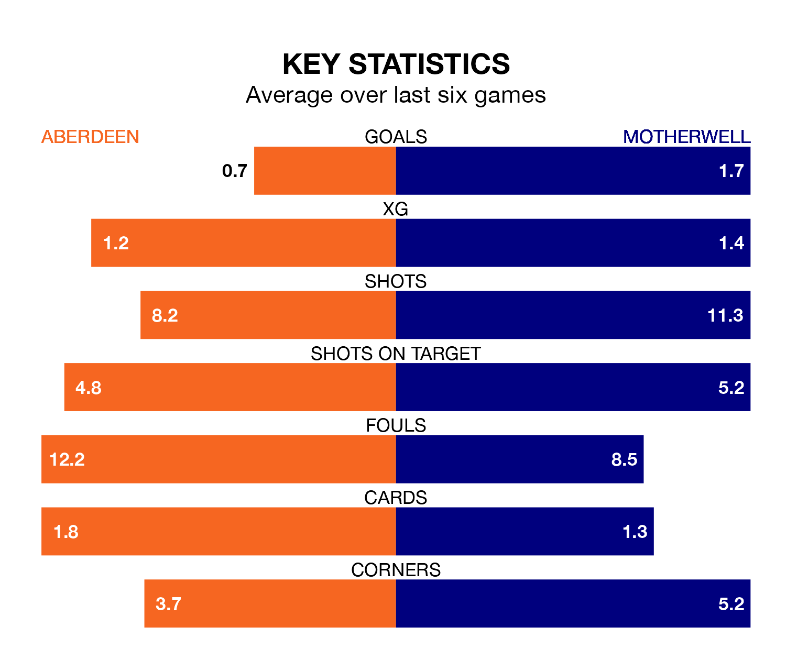

Aberdeen host Motherwell on Saturday at the Pittodrie Stadium in the Premiership.
In their last league match, on April 13, Aberdeen drew with Dundee 0-0 at home.
Motherwell also drew, 1-1 at home against Hibernian, with Shane Blaney scoring their goals.
With 35 goals in 33 games so far this season, Aberdeen are scoring at below the league average rate with 1.1 goals per game. And they are conceding more than average, letting in 49 goals at a rate of 1.5 per game.
Motherwell, meanwhile, are above average scorers, with 1.4 goals per game, compared to a league average of 1.3. They have conceded 1.5 goals per game.
In the last 10 years, Aberdeen and Motherwell have played each other on 33 occasions. Aberdeen won 18 of them, Motherwell 11, and they drew four times.
On average, Aberdeen scored 1.6 goals and Motherwell 1.2 in those matches.
Their last meeting was on March 16, when Aberdeen won 1-0 away.
In Bojan Miovski, the hosts have one of the league's most on-form strikers so far this season. He has notched 14 goals in 33 appearances, to sit third in the scoring charts.
His goal rate of one every 205 minutes is slightly quicker than that of Thelonius Bair, the away team's top scorer with a goal every 169 minutes, and a total of 13 goals in 33 games.
Aberdeen are ninth in the table after 33 games, of which they have won eight and drawn 11, earning 35 points.
Motherwell are one place ahead of Aberdeen in eighth, with eight wins and 13 draws putting them on 37 points.
The home side are in mixed form in the Premiership, with two wins and two draws from their last six games.
With three wins and two draws over that period, Motherwell's form is better – they have taken 11 points from 18, compared to Aberdeen's eight.
Updated: 07:59 (UTC), 26/04/24